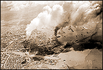

|
j
a v a s c r i p t |
Pg.1/5
September 21, 1944 — MANILA BOMBED !!!!!!!!

Click for Images
At 0930, Ed Piñol and I were in front of his dad's Calle Nueva store when antiaircraft guns suddenly opened up, rattling the windows. People were slow to react because antiaircraft practice was expected and the sirens hadn't sounded. I knew it was an air raid when I heard two dull thuds and felt the concussion waves in my ears. Then all hell broke loose as the lights went out and we heard the roar of low-flying planes. A running lad shooed by screaming: "Planes are bombing the Bay!" We took off for the Jones Bridge and got there in time to see several planes dive on ships in the Bay. "Let's go to the Crystal Arcade," Penny shouted. Running for my bike, I came across Ernest Klingler behind Perlman's. He grasped my hand, shook it and said, "Whoopee!" I replied, "Whoopee" too; then we both blushed. "Let's see," he said, "today is September 21." "September 21, yeah," I echoed, "the greatest day in the world." I went to the Bank of Commerce Building to make a call, but "Sugar" Matsuka was already there, shouting into the telephone: Do not be frightened. Eet ees practice onree. Yes, practice ... onree practice. Don't fear.... Yes, yes, practice — don't worree.... No-no-no-no, it can't be.... I waited, but he didn't sound like he was ever going to stop, so I left. Walking to Hemady, I followed the sight of a Grumman as it scurried into the clouds, turned swiftly, and dived out of sight chased by four antiaircraft puffs that weren't even close. So much noise echoed off the buildings that I found it hard to distinguish between the antiaircraft and the bombs. The air raid siren finally went on at 1007; by that time the first raid was over. Not less than 100 planes bombed the harbor and airfields. Fort McKinley, Camp Murphy and possibly Nichols airfields were hit simultaneously, catching the Japanese completely by surprise. I saw smoke from the Bay and from Nichols or Pasay but no large fires. An eyewitness told me he saw 20 dive-bombers miss a weaving destroyer before it probably escaped. He also thought two planes exploded as they dove on their targets. The Grace Park airfield was also hit and set afire — many Filipinos had been working there. |
|
|
|
|